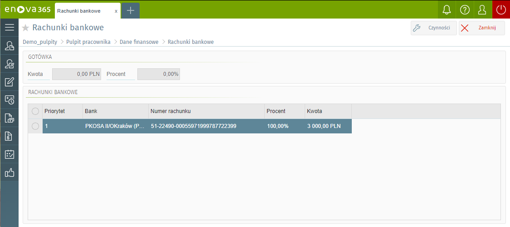

Dane podatkowe
Na formularzu zgromadzone są wszystkie dane podatkowe związane z pracownikiem:
Urząd skarbowy
Informacje dotyczące adresu, który ma być umieszczany na deklaracjach PIT - parametr ‘Na deklaracjach umieszczaj zawsze adres zameldowania’ ustawiony na TAK, oznacza, że na deklaracji PIT będzie wykazany adres zameldowania. Jeżeli parametr będzie ustawiony na NIE do deklaracji PIT będzie pobierany adres zamieszkania.
Identyfikator podatkowy NIP
Identyfikator podatkowy (PESEL lub Numer NIP) Koszty uzyskania i ulga podatkowa. Wartość kosztów uzyskania i ulgi podatkowej zapisywane są jako iloczyn nominalnej wartości (odczytywanej z globalnej konfiguracji programu) i współczynnika definiowanego indywidualnie dla pracownika. Standardowo współczynniki przyjmują wartość 1,00 (jeden). Dla pracowników mieszkających poza miejscowością, w której znajduje się zakład pracy współczynnik kosztów uzyskania powinien przyjąć wartość 1,25 (koszty uzyskania podwyższone o 25%). W przypadku, gdy pracownik ma status emeryta-rencisty współczynnik ulgi podatkowej wynosi 0.
Procent wynagrodzenia z 50% kosztami uzyskania. Pole uzupełniane w przypadku pracowników, dla których części przychodów mają zastosowanie koszty uzyskania przychodów na podstawie art.22 ust.9 pkt 3 ustawy. Procent określa, jaka część przychodów będzie podlegać takim podwyższonym kosztom.
Nie naliczaj kosztów 50% począwszy od: Informacja od którego miesiąca mają być nie naliczane 50% koszty uzyskania przychodów (pole uzupełnianie w przypadku konieczność narzucenia konkretnego miesiąca, od którego 50% koszty uzyskania przychodów mają być nie liczone).
Progi podatkowe.
Rachunki bankowe
Wypłaty dla pracownika realizowane mogą być gotówką (poprzez kasę) lub mogą być przelewane na wskazane przez pracownika konta bankowe (w całości lub częściowo). Pracownik może posiadać dowolną liczbę rachunków bankowych. Wskazana część przysługującego może być również przelewane na przykład na konto współmałżonka. Poszczególne, niezablokowane konta bankowe pracownika zapisywane są w programie w postaci listy.

Wypłaty
Formularz zawiera informacje dotyczące wypłat wynagrodzenia, z możliwością filtrowania wg. typu wypłaty (Wszystkie, Etat, Umowa, Inne), wg. indeksu (Wg okresu, Wg daty wypłaty) oraz okresu za jaki zostały wypłacone.
Dodatkowo z poziomu listy wypłat użytkownik można wygenerować następujące wydruki:
- Informacja o średnich dochodach
- Szczegółowa informacja o średnich dochodach
- Roczna karta wynagrodzeń
- Pasek wypłaty
Każdą z wypłat można otworzyć przy pomocy przycisku 'Otwórz' lub poprzez dwukrotne kliknięcie w pozycję danej wypłaty. Formularz wypłaty pozwala zapoznać się ze szczegółami dotyczącymi wypłaconego wynagrodzeniu, z uwzględnieniem podziału na wynagrodzenie ze stosunku pracy i zasiłki (opodatkowane i nieopodatkowane).
Informacja IMIR
Listę tworzą wygenerowane dla pracownika, zatwierdzone raporty ZUS IMIR. Niezatwierdzone dokumenty nie będą widoczne dla pracownika.
Informacja ZUS IMIR jest to dokument dla osoby ubezpieczonej, przekazywany raz w roku, za rok ubiegły. Jednak na żądanie ubezpieczonego informacja może być przekazywana raz w miesiącu. Zarówno informacja roczna, jak i miesięczna, muszą zawierać te same dane, które płatnik wykazał w przekazanych do ZUS imiennych raportach miesięcznych za ubezpieczonego.